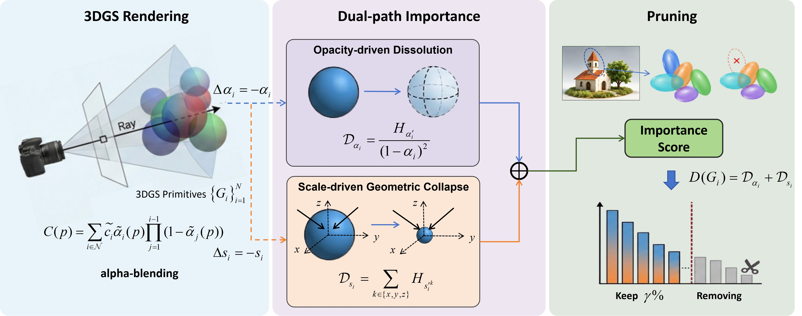
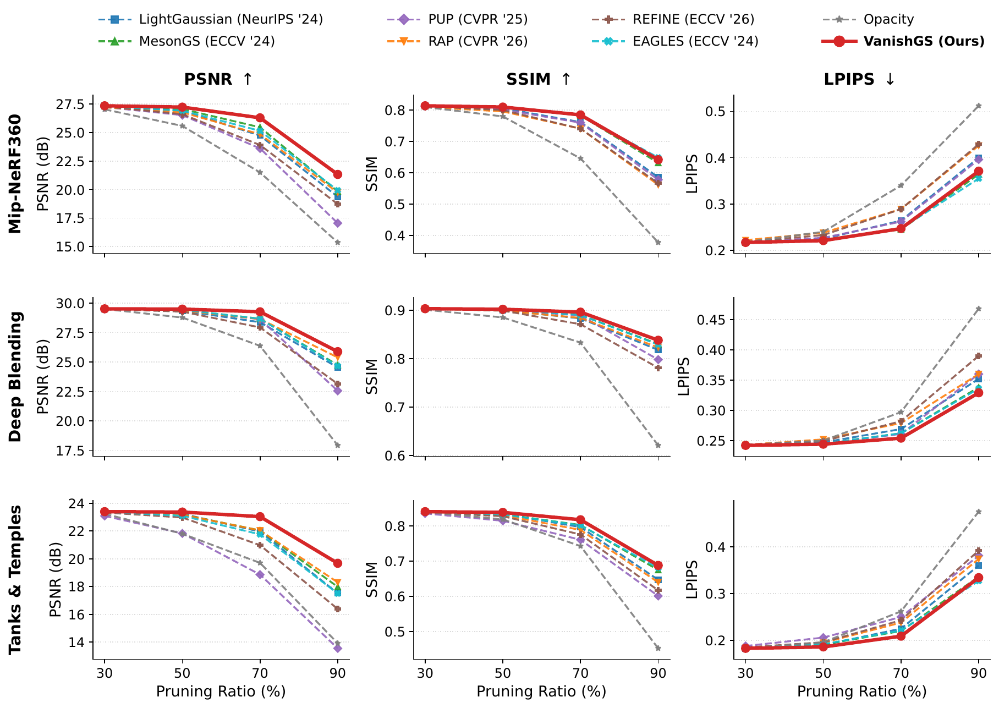
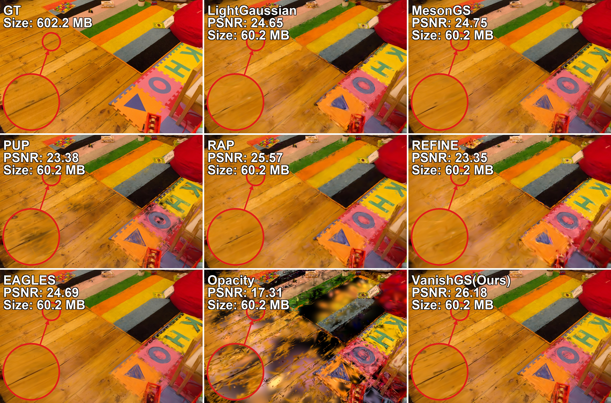
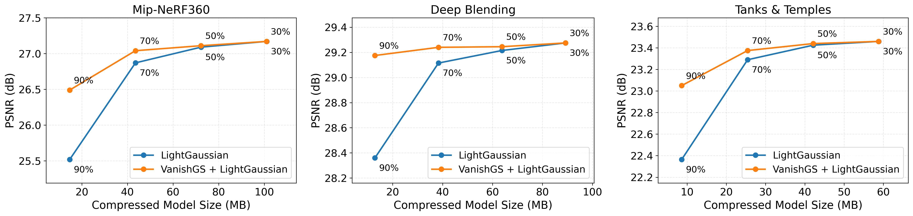
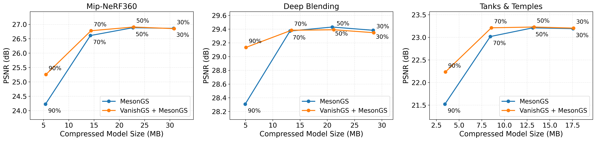

Overview
Abstract
While 3D Gaussian Splatting (3DGS) enables high-quality real-time novel view synthesis, its reliance on millions of Gaussian primitives leads to substantial storage and computational overhead. Existing post-pruning methods typically estimate primitive importance from rendering contribution, heuristic attributes, or generic parameter sensitivity, which do not directly measure the rendering distortion caused by removing a Gaussian, potentially leading to inaccurate importance estimation. In this paper, we propose VanishGS, a post-pruning framework that estimates Gaussian importance by the rendering distortion induced by its disappearance. To capture this effect, we model Gaussian disappearance through two paths, opacity dissolution and geometric collapse, characterizing its rendering impact from both appearance and geometric perspectives. We estimate the directional distortion along these pruning perturbations using the Gauss–Newton matrix and efficiently approximate the required diagonal entries through randomized projections. By measuring the cost of removing each Gaussian, VanishGS provides an importance criterion that is better aligned with the pruning objective. Extensive experiments across multiple benchmarks and pruning ratios demonstrate that VanishGS consistently preserves higher rendering quality. Moreover, VanishGS can be integrated into existing post compression pipelines, further demonstrating its generality as a plug-and-play pruning strategy.
Method
Pruning by Modeling Disappearance
VanishGS asks a pruning-aligned question: how much distortion would occur if this Gaussian vanished?

VanishGS models Gaussian disappearance through opacity dissolution and geometric collapse, estimates their rendering distortion, and ranks primitives by a unified disappearance cost.
Opacity Dissolution
The first path makes a Gaussian completely transparent while leaving its geometry and color unchanged. The resulting pruning-aligned perturbation measures the distortion associated with removing its radiometric presence.
Geometric Collapse
The second path collapses the spatial support of a Gaussian, characterizing disappearance from the geometry side. Its distortion complements the opacity path for primitives whose spatial footprint is critical to the rendered scene.
Distortion Approximation
Rendering distortion is locally approximated with an aggregated Gauss–Newton matrix. Only diagonal terms are required, avoiding construction of the full rendering Jacobian or full second-order matrix.
Unified Importance
The two disappearance costs are combined into a single importance score. Gaussians with the smallest expected removal distortion are pruned first for the target budget.
Experiments
Quality under Different Pruning
Evaluation covers Mip-NeRF 360, Deep Blending, and Tanks & Temples under pruning ratios from 30% to 90%, using PSNR, SSIM, and LPIPS.
30% → 90%
Pruning ratios evaluated across the quality–budget curves
3 Benchmarks
Mip-NeRF 360 · Deep Blending · Tanks & Temples
Zero-shot
Primary pruning comparisons without post-pruning fine-tuning

Rendering quality under different pruning ratios. VanishGS shows a slower degradation trend as the pruning ratio becomes more aggressive, particularly beyond 70% pruning.

Visual comparison after 90% pruning.
Plug-and-Play Compression
Integration with Existing Compression Pipelines
VanishGS can replace the native pruning criterion inside existing post-compression pipelines while leaving their remaining configurations unchanged. The resulting variants improve the rate–distortion trade-off across multiple datasets, especially under aggressive pruning.

Replacing LightGaussian's native pruning criterion with VanishGS across Mip-NeRF 360, Deep Blending, and Tanks & Temples.

Replacing MesonGS's native pruning criterion with VanishGS across the same three benchmarks.
Interactive Results
Visual Comparison Across Scenes
Drag the comparison slider in the interactive demo to inspect scene-level visual differences. The embedded demo is intentionally kept as a separate file so it can be updated independently.